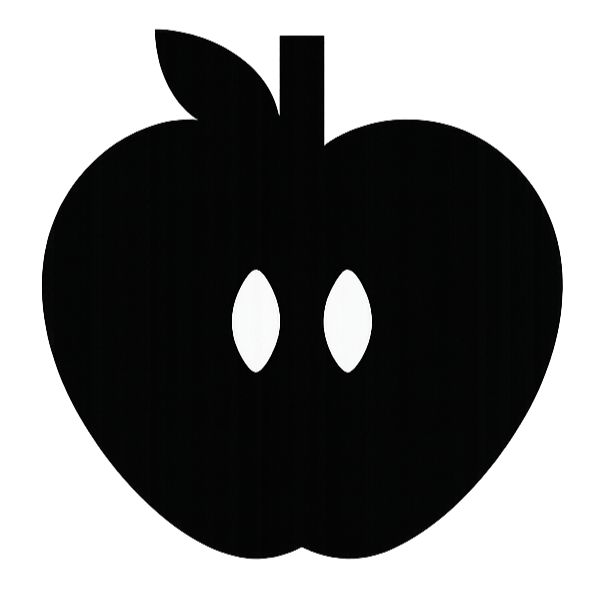

Todas
Comunicação
Comportamento

alimentação
introdução escolar
Terapias
Vida em familia
Adolescência


Entenda os direitos da criança com TEA e como promover um ambiente mais acolhedor e inclusivo.
Entenda os direitos da criança com TEA e como promover um ambiente mais acolhedor e inclusivo.
Entenda os direitos da criança com TEA e como promover um ambiente mais acolhedor e inclusivo.
Nosso blog reúne conteúdos escritos por profissionais especializados em TEA para levar informação de qualidade e apoio a famílias e cuidadores
Cadastre-se e receba novos artigos e conteúdos exclusivos no seu e-mail.